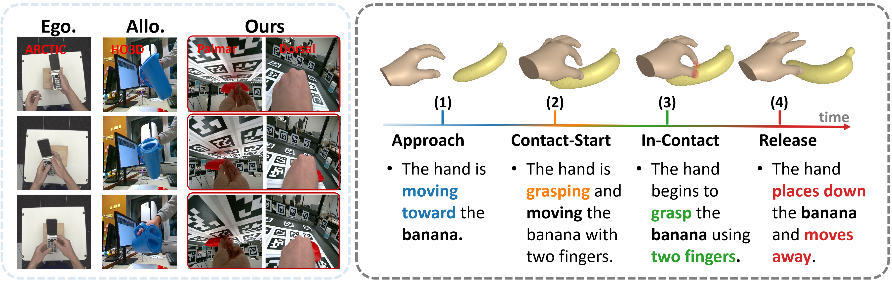

G2 · G3 · G5
fixed + wrist-mounted
Dataset overview
One minute of WristHOI
Hands, objects, dense contact and interaction phases — rendered from the released labels in all nine synchronized views.
Abstract
Capturing the “last mile” of interaction
Fine-grained hand-object interaction (HOI) understanding relies heavily on the precise capture of contact dynamics. However, conventional allocentric and egocentric viewpoints are often hindered by severe self-occlusion and object-induced occlusion, resulting in sparse and fragmented contact cues. We present WristHOI, a dual wrist-mounted dataset designed to capture the proximal “last-mile” of interaction. WristHOI employs a symmetric near-field camera configuration to provide synchronized, complementary observations from both dorsal and palmar perspectives. While this near-field setup introduces technical hurdles such as extreme perspective distortions and rapid viewpoint variations, it offers unprecedented visual evidence at the fingertip-object interface. The dataset comprises 1,260 sequences of 10 subjects interacting with 14 objects across three grasping paradigms (G2, G3, G5). In total, WristHOI provides 1.45M frames with high-quality annotations at multiple levels, including hand-object poses, contact labels, and temporal interaction states. We establish a comprehensive benchmark for pose estimation, contact prediction, and temporal interaction understanding. Our results demonstrate the value of wrist-mounted observations for capturing fine-grained interaction cues under severe occlusion.

What's inside
Rich, multi-level annotations
Hand and object poses live in one world frame and reproject consistently into every view.
Nine synchronized RGB-D views
Seven fixed allocentric cameras surround the workspace, while two wrist-mounted cameras look at the hand from the dorsal and palmar side at close range. Hand (MANO) and object labels live in one world frame and reproject consistently into every view.
2D hand keypoints & masks
21 hand keypoints are provided in every view, together with hand segmentation masks for the wrist cameras, where extreme perspective and near-field distortion make the hand appear very differently from conventional viewpoints.
14 everyday objects
Scanned object meshes at metric scale — from bottles, cups and cans to tools such as pliers, a stapler and a glue gun — with a rigid 6-DoF object pose in every frame, grasped under three paradigms (G2, G3, G5).
Dense hand–object contact
Per-vertex contact on the 778 MANO vertices is derived from the 3D hand and object geometry, and can be visualized directly in the wrist views where the fingertip–object interface is actually observed.
Four-phase interaction states
Each sequence is segmented into Approach Contact-Start In-Contact Release, and every phase is paired with a language description — enabling text-guided temporal localization.
Wrist-camera localization
Where are the wrist cameras?
The wrist cameras move with the hand. Their world pose is recovered for every frame from a static AprilTag map, so that world-space hand and object labels become pixel-aligned in the egocentric wrist views.
- Tag mapAprilTags on the workspace are refined by multi-view reprojection in the fixed cameras.
- DetectionTags visible in each wrist view are detected per frame.
- Joint PnPAll visible tag corners constrain one camera pose (RANSAC + LM).
- Labels in wrist viewsHand and object labels are reprojected into the dorsal and palmar views.
Annotation quality
Validated on six axes
Automatic labels are compared against a three-annotator fused manual ground truth together with inter-annotator agreement (IAA); geometric checks (depth, penetration, temporal states) run on full p007 + p008 sequences.
Manual annotation vs. dataset
Automatic geometric checks
Three-annotator fused manual 2D keypoints (21 MediaPipe joints on cam09) are compared against released MANO reprojections. PCK is normalized by wrist-to-middle-MCP distance. Evaluated on 1,744 frames.
Dual-view manual annotation (cam09 + cam07; 1,744 frames × 2 views) with DLT triangulation,
compared against released keypoints3d using three-annotator fused manual GT.
Three-annotator fused manual contact labels (778 MANO vertices) are compared against dataset automatic
contact_label on 1,260 frames.
Contact distance threshold sensitivity (τ = 1–5 mm)
WristHOI marks a MANO vertex as in contact when its hand–object distance falls below an on-threshold τ (baseline τ = 4 mm, with hysteresis in the released pipeline). Using cached per-vertex distances, we re-run the same classification logic at τ ∈ {1, 2, 3, 4, 5} mm and report: Contact ratio — the average fraction of hand vertices labeled in contact; Flip rate — the fraction of frames whose contact labeling differs from the τ = 4 mm baseline. Flip rates stay low near the baseline (e.g. 2.9% at τ = 3, 3.2% at τ = 5), indicating stable automatic contact labels. This is not a per-state breakdown; see the Temporal tab for how the four interaction states separate in distance.
| On-threshold τ (mm) | Baseline | Contact vertex ratio | Flip rate vs τ = 4 |
|---|---|---|---|
| 1 | — | 13.9% | 12.1% |
| 2 | — | 17.7% | 5.4% |
| 3 | — | 19.3% | 2.9% |
| 4 | ✓ | 20.5% | 0 |
| 5 | — | 21.6% | 3.2% |
Depth-map samples are back-projected and measured against the object mesh surface (mean point-to-mesh error). Fully automatic evaluation on p007+p008, 5,014 frames.
Not applicable — this axis uses fully automatic geometric verification without manual ground truth.
Breakdown by grasp
| Grasp | Frames | Mean ↓ (mm) | Median ↓ (mm) | Inlier@10mm ↑ |
|---|---|---|---|---|
| Overall | 5,014 | 4.44 | 5.15 | 91.4% |
| g2 | 1,680 | 3.84 | 4.42 | 92.8% |
| g3 | 1,668 | 4.07 | 4.08 | 92.0% |
| g5 | 1,666 | 5.47 | 6.95 | 89.2% |
Signed distance from MANO hand vertices to the object mesh (negative = interpenetration). Evaluated on Contact-Start + In-Contact frames, 5,733 frames.
Not applicable — penetration is computed automatically from released meshes and poses.
Breakdown by state and grasp
| Group | Frames | Median max pen. ↓ | <5mm ↑ | <10mm ↑ |
|---|---|---|---|---|
| Overall | 5,733 | 3.45 mm | 62.0% | 83.2% |
| In-Contact | 5,061 | 3.88 mm | 58.7% | 81.5% |
| Contact-Start | 672 | 0.38 mm | 86.6% | 95.8% |
| g2 | 1,864 | 3.50 mm | 62.8% | 87.0% |
| g3 | 1,923 | 3.22 mm | 62.7% | 83.4% |
| g5 | 1,946 | 3.69 mm | 60.5% | 79.3% |
Per-frame minimum hand–object distance from contact_sequence.json, grouped by the four
released temporal states (Approach / Contact-Start / In-Contact / Release). Mesh-free automatic check on
full p007+p008 sequences. These states are derived from per-vertex contact distances with threshold
τ = 4 mm; see the Contact tab for how labels change when τ is varied.
| State | N frames | Mean (mm) | Median (mm) | P95 (mm) |
|---|---|---|---|---|
| Approach | 19,323 | 98.38 | 89.67 | 218.91 |
| Contact-Start | 919 | 1.36 | 0.44 | 4.91 |
| In-Contact | 9,089 | 0.74 | 0.12 | 4.68 |
| Release | 13,002 | 100.23 | 94.56 | 220.03 |
Four states are monotonically separated: In-Contact median 0.12 mm vs. about 90 mm in Approach and Release (full p007+p008 sequences).
Manual validation uses three-annotator fused ground truth on large-scale subsets: 2D and 3D hand pose on 1,744 frames (3D: dual-view, 1,744 × 2); contact labels on 1,260 frames.
Automatic checks (object depth, penetration, temporal states) use full p007+p008 sequences (5,014 / 5,733 / full-sequence frame counts, respectively).
These results provide quantitative evidence supporting the reliability of WristHOI annotations. Contact labels are validated through complementary evaluations of hand pose accuracy, object pose quality, geometric consistency, physical plausibility, temporal state separation, and manual verification.
Benchmark
Experimental results
Dataset characteristics, hand pose estimation, contact prediction and text-guided temporal localization on WristHOI.
Comparison with Representative HOI Datasets
WristHOI compared with existing hand–object interaction datasets in terms of observation setup, annotation scope, and dataset scale.
| Dataset | Observation Setup | Annotations | Statistics | ||||||||||
|---|---|---|---|---|---|---|---|---|---|---|---|---|---|
| Ego. | Wrist | Allo. | Type | Res. | Hand | Obj. | Contact | Text | Method | Subjects | Objects | Frames | |
| DexYCB [7] | ✗ | ✗ | ✓ | RGB-D | 640×480 | ✓ | ✓ | ✗ | ✗ | Semi-auto | 10 | 20 | 582K |
| ContactPose [4] | ✗ | ✗ | ✓ | RGB-D | 1920×1080 | ✓ | ✓ | ✓ | ✗ | Marker | 50 | 25 | 2.9M |
| ARCTIC [15] | ✓ | ✗ | ✓ | RGB | 2800×2000 | ✓ | ✓ | ✓ | ✗ | MoCap | 10 | 11 | 2.1M |
| HOI4D [44] | ✓ | ✗ | ✗ | RGB-D | 1280×800 | ✓ | ✓ | ✗ | ✗ | Semi-auto | 4 | 800 | 2.4M |
| HOT3D [1] | ✓ | ✗ | ✗ | RGB-D | 1408×1408 | ✓ | ✓ | ✗ | ✗ | Semi-auto | 19 | 33 | 3.7M |
| OakInk2 [45] | ✓ | ✗ | ✓ | RGB-D | 848×480 | ✓ | ✓ | ✗ | ✓ | Semi-auto | 9 | 75 | 4.0M |
| HO3D [18] | ✗ | ✗ | ✓ | RGB-D | 640×480 | ✓ | ✓ | ✗ | ✗ | Automatic | 10 | 10 | 103K |
| H2O [34] | ✓ | ✗ | ✓ | RGB-D | 1280×720 | ✓ | ✓ | ✗ | ✗ | Semi-auto | 4 | 8 | 571K |
| Hoi! [13] | ✓ | ✓ | ✗ | RGB | N/A | ✗ | ✓ | ✓ | ✓ | Automatic | N/A | 381 | N/A |
| WristHOI (Ours) | ✗ | ✓ | ✓ | RGB-D | 640×480 | ✓ | ✓ | ✓ | ✓ | Semi-auto | 10 | 14 | 1.45M |
Hand Pose Estimation Performance
Comparison between fixed-view methods and our wrist-view configurations on the test split. Errors are reported in millimeters (mm). Bold indicates the best overall performance.
| Setting | Method | MPJPE ↓ | PA-MPJPE ↓ | Mesh Err. ↓ |
|---|---|---|---|---|
| Fixed-view | HandOccNet | 25.41 | 19.62 | 24.50 |
| SemiHand | 23.19 | 18.57 | 22.37 | |
| SimpleHand | 21.79 | 17.82 | 20.94 | |
| HaMeR | — | 14.20 | — | |
| Wrist-view | HaMeR (Dorsal) | — | 13.83 | 14.28 |
| HaMeR (Palmar) | — | 13.69 | 14.24 | |
| HaMeR (Dual-wrist) | — | 13.45 | 13.73 | |
Contact Prediction Results
Performance of HACO under single-view inputs and dual-wrist fusion ablations. Early fusion corresponds to the Dual-wrist baseline; gated fusion yields the best overall contact prediction. Bold indicates the best result per column.
| Setting | Input / Fusion | Contact F1 ↑ | Precision ↑ | Recall ↑ |
|---|---|---|---|---|
| Single-view | Fixed-only | 0.486 | 0.427 | 0.682 |
| Dorsal | 0.477 | 0.409 | 0.684 | |
| Palmar-only | 0.597 | 0.523 | 0.753 | |
| Dual fusion | Early fusion | 0.498 | 0.419 | 0.700 |
| Late-add | 0.527 | 0.470 | 0.692 | |
| Late-cat-proj | 0.489 | 0.398 | 0.743 | |
| Gated fusion | 0.619 | 0.532 | 0.765 | |
Text-guided Temporal Localization
ZS: zero-shot; TH: trainable head. S.Err and E.Err denote the absolute errors of the predicted start and end boundaries, respectively.
| Model | Input | Acc. | Temp. Err. | ||||
|---|---|---|---|---|---|---|---|
| R1@0.3 ↑ | R1@0.5 ↑ | R1@0.7 ↑ | mIoU ↑ | S.Err ↓ | E.Err ↓ | ||
| CLIP-ZS | Dorsal | 0.027 | 0.015 | 0.001 | 0.046 | 42.358 | 44.636 |
| Palmar | 0.071 | 0.035 | 0.014 | 0.074 | 39.306 | 44.357 | |
| Dual | 0.048 | 0.022 | 0.004 | 0.054 | 39.350 | 42.623 | |
| CLIP-TH | Dorsal | 0.461 | 0.331 | 0.171 | 0.313 | 24.815 | 32.260 |
| Palmar | 0.549 | 0.424 | 0.250 | 0.384 | 20.907 | 27.134 | |
| Dual | 0.572 | 0.446 | 0.280 | 0.408 | 20.785 | 26.561 | |
Citation
BibTeX
@inproceedings{chu2027wristhoi,
title = {WristHOI: A Dual Wrist-mounted Dataset for Contact-aware Hand-Object Interaction},
author = {Chu, Xin and Sung, Junghoon and Kim, Changho and Cho, Seongwhan and Choi, Eunjee and Lee, JongHa and Choi, Younggeun},
booktitle = {Proceedings of the IEEE/CVF Winter Conference on Applications of Computer Vision (WACV)},
year = {2027}
}Acknowledgments
This research was supported by the MSIT (Ministry of Science and ICT), Korea, under the ITRC (Information Technology Research Center) support program (IITP-2025-RS-2024-00437102) and the Global Research Support Program in the Digital Field program (IITP-2025-RS-2024-00418641) supervised by the IITP (Institute for Information & Communications Technology Planning & Evaluation).